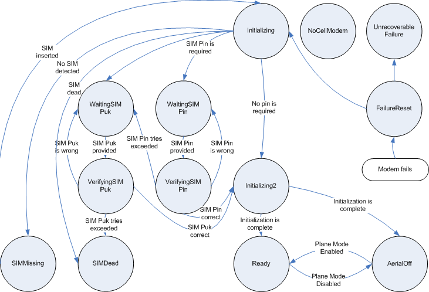

|
Home · All Namespaces · All Classes · Grouped Classes · Modules · Functions | |
The CellModemManager class simplifies the initialization and monitoring of a cellular phone modem. More...
#include <CellModemManager>
Inherits QAbstractCallPolicyManager.
The CellModemManager class simplifies the initialization and monitoring of a cellular phone modem.
The CellModeManager provides a Qt Extended Server Task. Qt Extended Server Tasks are documented in full in the QtopiaServerApplication class documentation.
| Task Name | CellModem |
| Interfaces | CellModemManager |
| Services | Suspend |
The CellModemManager class provides a simplified goal-oriented wrapper around the Telephony APIs. While the telephony subsystem provides the ability to query and control every aspect of a cellular modem, the CellModemManager class focuses only the task of initializing the telephony subsystem and monitoring common attributes such as the current operator or cell location.
To reduce the complexity of developing a system using CellModemManager, the class rigidly enforces a state transition model of startup and shutdown. Refer to the CellModemManager::State enumeration for this model and an exact description of each state. By guarenteeing the transition flow, validating users of the API is greatly reduced.
In addition to the C++ methods provided, the CellModemManager class also sets the following value space keys:
| Key | Description |
|---|---|
| /Telephony/Status/RegistrationState | Set to the current registration state of the network. Possible values are "None", "Home", "Searching", "Denied", "Unknown" or "Roaming" and correspond to the values of the QTelephony::RegistrationState enumeration. |
| /Telephony/Status/NetworkRegistered | Set to true if the network is registered (in the home or roaming states), otherwise false. |
| /Telephony/Status/Roaming | Set to true if the network is in the roaming statem otherwise false. |
| /Telephony/Status/CellLocation | Set to the current cell location. This is equivalent to the value returned by the cellLocation() method. |
| /Telephony/Status/OperatorName | Set to the current network operator name. This is equivalent to the value returned by the networkOperator() method. |
| /Telephony/Status/OperatorCountry | Set to the current network operator's country name, if available. This is equivalent to the value returned by the networkOperatorCountry() method. |
| /Telephony/Status/CallDivert | True if voice calls will be unconditionally diverted, false otherwise. |
| /Telephony/Status/PlaneModeAvailable | True if the modem supports "plane mode". Possible values are "Yes", "No" or "Unknown". The "Unknown" value is set during modem initialization before Qt Extended has determined whether the modem can support plane mode. |
| /Telephony/Status/ModemStatus | Set to the string value of the current State enumeration value. |
| /Telephony/Status/SimToolkit/Available | Set to true if SIM toolkit support is available, otherwise false. |
| /Telephony/Status/SimToolkit/IdleModeText | Set to the value of the idle mode text string from the SIM toolkit application. |
| /Telephony/Status/SimToolkit/IdleModeIcon | Set to the QIcon to display in idle mode. |
| /Telephony/Status/SimToolkit/IdleModeIconSelfExplanatory | Set to true if the idle mode icon is self-explanatory without accompanying text. |
| /Telephony/Status/SimToolkit/MenuTitle | Set to the title of the SIM toolkit application's main menu. |
This class is part of the Qt Extended server and cannot be used by other Qt Extended applications.
The State enumeration represents the current state of the CellModemManager class. The allowable transitions between each of the 14 possible states is strictly defined and enforced. The following diagram shows all of the state transitions possible.

| Constant | Value | Description |
|---|---|---|
| CellModemManager::NoCellModem | 0 | There is no cell modem present on the device. |
| CellModemManager::Initializing | 1 | The modem is initializing, but has not yet determined whether a SIM is present or if a pin is required. |
| CellModemManager::Initializing2 | 2 | The modem is initializing. A SIM card is present and a pin number is either not required or has been correctly entered. |
| CellModemManager::Ready | 3 | The modem is ready to connect to the network and service user requests. Most status changed notifications and requests that the CellModemManager class supports will return default or empty values until it enters the Ready state. |
| CellModemManager::WaitingSIMPin | 4 | The modem requires a SIM pin number to continue initializing. The pin number should be requested from the user and entered through the setSimPin() method. |
| CellModemManager::VerifyingSIMPin | 5 | The modem has received the SIM pin number and is verifying whether it is correct. If incorrect, it will reenter the WaitingSIMPin state (or the WaitingSIMPuk state if the maximum number of SIM pin attempts has expired), otherwise it will proceed to the Initializing2 state. |
| CellModemManager::WaitingSIMPuk | 6 | The modem requires a SIM puk number to continue initializing. The SIM puk is an unlock code for the SIM which is generally required if the SIM pin is incorrectly entered a number of times. The specific number of attempts allowed is determined by either the SIM card or the modem itself. The puk number, and a new pin number, should be entered through the setSimPuk() method. |
| CellModemManager::VerifyingSIMPuk | 7 | The modem has received the SIM puk number and is verifying wither it is correct. |
| CellModemManager::SIMDead | 8 | The user has attempted entry of the SIM puk more than the allowed number of times and the SIM has disabled itself. The specific number of attempts allowed is determined by either the SIM card or the modem itself. Generally SIMDead means that a new SIM card will be required for the account. Emergency calls will still be available in this state. |
| CellModemManager::SIMMissing | 9 | The SIM card is missing and needs to be inserted. Emergency calls will still be available in this state. |
| CellModemManager::AerialOff | 10 | The modem is fully initialized, but is in plane mode with the aerial turned off. |
| CellModemManager::FailureReset | 11 | The modem has encountered an error and is resetting. |
| CellModemManager::UnrecoverableFailure | 12 | The modem has failed in such a way that it cannot be recovered. Qt Extended or the device will need to be restarted. |
Destroy the CellModemManager instance.
If block is true, temporarily disable changes in phone profile from effecting whether or not the modem is enabled. If block is false, the modem will be immediately set to the state dictated by the plane mode value returned by QPhoneProfileManager and any further changes to this value will result in changes to the modem state.
See also profilesBlocked().
Returns true if unconditional call forwarding is enabled. This call will always return false unless CellModemManager is in the Ready state.
Emitted whenever the state of unconditional call forwarding changes. enabled will be true if unconditional call forwarding is on, and false otherwise.
See also callForwardingEnabled().
Returns true if a cell modem is available, otherwise false.
Assuming profiles control has not been temporarily profilesBlocked() blocked, CellModemManager normally enables and disables the modem in response to changes in the plane mode value returned by QPhoneProfileManager.
A call to this method disables this functionality and setModemEnabled() must be called manually to control the modem. This method can only be called prior to CellModemManager's construction.
See also CellModemManager::profilesControlModem().
Return the list of emergency numbers. This list is currently 112, 911, 08, 000, 999, 110, 118, and 119, but may change in the future.
Returns the current network operator. This call will always return an empty string unless CellModemManager is in the Ready state.
Emitted whenever the network operator changes. networkOperator will be set to the new value.
Returns the current network operator's country. This call will always return an empty string unless CellModemManager is in the Ready state.
Returns true if a network is registered, false otherwise. A network is registered if registrationState() is either QTelephony::RegistrationHome or QTelephony::RegistrationRoaming.
Returns true if the modem is in or is transitioning into plane mode, false otherwise. The call will return the last value set through setPlaneModeEnabled().
As a modem takes time to respond to requests, planeModeEnabled() may not represent the true modem state. Instead, it represents the intended state of the modem once all pending operations have been performed.
The true state of the modem can be queried through the state() method. Ignoring potential abnormal conditions, the modem has reached a steady state when state() == (planeModeEnabled()?AerialOff:Ready).
See also setPlaneModeEnabled().
Emitted whenever the plane mode enabled value, as set by setPlaneModeEnabled() changes. enabled will be set to the new value.
Returns true if the modem supports plane mode. Plane mode, a state in which the modem neither transmits or receives information, is suitable for use on an airplane.
Return true if profiles have been temporarily blocked from effecting the modem state, false otherwise.
See also blockProfiles().
Returns true if the plane mode value returned by QPhoneProfileManager will control whether the modem is enabled or disabled.
See also disableProfilesControlModem().
Returns the current network registration state. This call will always return QTelephony::RegistrationNone unless CellModemManager is in the Ready state.
Reimplemented from QAbstractCallPolicyManager.
Emitted whenever the network registration state changes.
Updates the value in value space at /Telephony/Status/CellLocation to location.
Reimplemented from QAbstractCallPolicyManager.
Sets the desired plane mode state to enabled. If enabled is true, the CellModemManager will attempt to disable the modem aerial and put it into the AerialOff state. If false, the aerial will be enabled and the manager will transition into the Ready state.
If the modem does not support plane mode, this method will have no effect. Support for plane mode can be determined through the planeModeSupported() method.
See also planeModeEnabled().
Set the SIM pin. This method may only be called while CellModemManager is in the WaitingSIMPin state.
Set the SIM puk and new pin. This method may only be called while CellModemManager is in the WaitingSIMPuk state.
Returns true if a sim supporting SIM toolkit applications is available, otherwise false.
Emitted whenever the state of SIM toolkit availability changes. available will be set to true if a sim supporting SIM toolkit applications is available, and false otherwise.
See also simToolkitAvailable().
Returns the icon to display when the system is in idle mode.
Returns true if the idle mode icon is self-explanatory without accompanying text.
Returns the text to display when the system is in idle mode.
Returns the title of the SIM toolkit application's main menu.
Return the current state of the CellModemManager instance.
Emitted whenever the state of CellModemManager changes from oldState to newState.
Returns state as a string.
| Copyright © 2009 Trolltech | Trademarks | Qt Extended 4.4.3 |